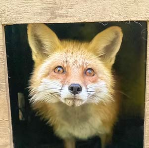
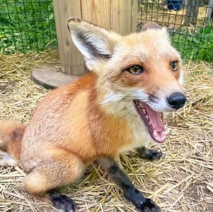
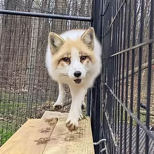
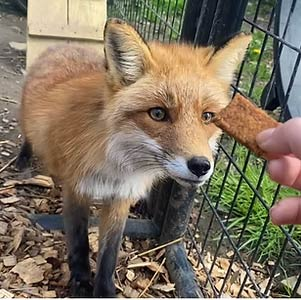

Our Residents
Toto's Story
_JPG.jpg)
Toto was primarily a "hands-off" fox, and didn't usually prefer physical attention. However, in his older years, he started to not mind the occasional love-scratch here and there. Even so, he and I had an incredible, unspoken bond. He was the catalyst to what we are today. I will miss him dearly and forever be thankful for what he taught me. 2012-2022
Click here for more information!Kaya's Story
Kaya is a Red fox who came in as a wildlife rehabilitation intake (the goal with those intakes is always release back into the wild). She was deemed non-releasable by one of our vets, because of her strangely calm demeanor around humans. She lacked a fear of humans that would leave her safe in the wild.
Click here for more information!Porsha's Story
Porsha has a fun, youthful personality, and she goes between super sassy to super loving in seconds. She's a great example of why it's so important to be able to recognize and be familiar with body language when working with foxes. She's a very comical fox!
Click here for more information!Loki's Story
He was very well-loved by his previous owners, and he primarily lived in their house. He was used as an exhibition animal for a few years, as his previous family had a small business where they traveled with exotic species that they owned. They had legally owned Loki under a USDA Exhibitor's license. Once further NYS regulations were released for certain species, they were unable to obtain the new license now required to own a fox in NYS.
Click here for more information!Mori's Story
Mori was an exhibit animal at a zoo, and due to his timid temperament, it was too stressful of an environment for him. He is going to do much better in a sanctuary environment like ours, where exposure to the public is extremely limited
Click here for more information!